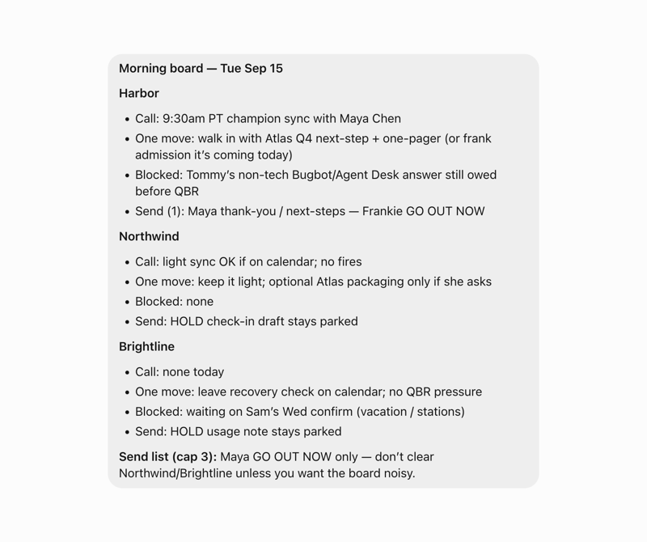
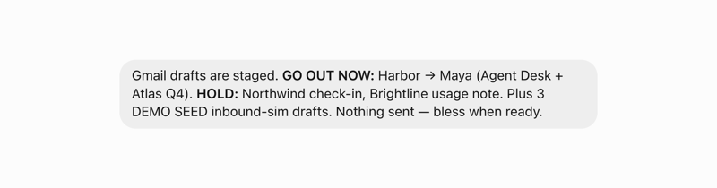
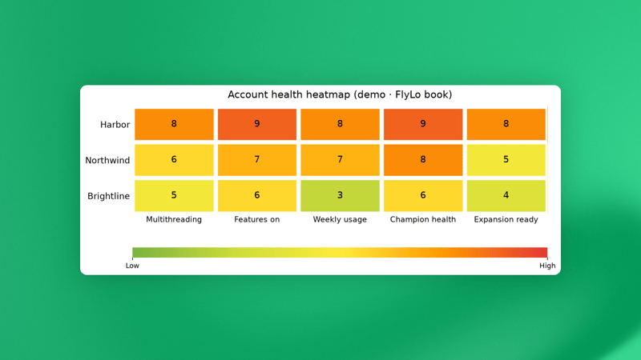
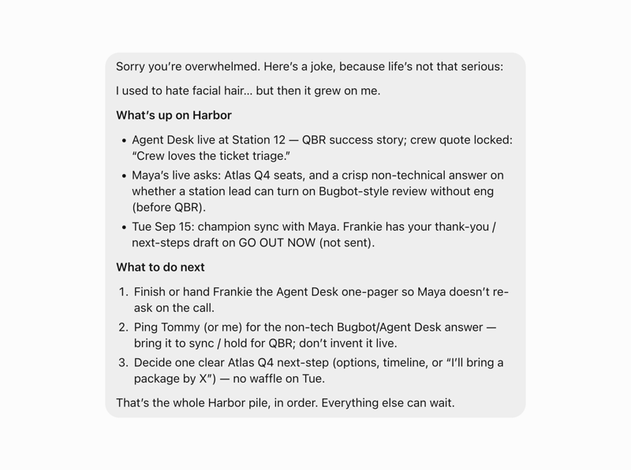

Official guides · 15/27
Grok Bot for Post-Sales
How I run post-sales with one chief of staff bot, account specialists, and routines that prep calls and keep promises from slipping.

At SpaceXSI, we've built Grok Bot (xAI's AI assistant that comes with its own computer) to take work off your plate and keep it moving, even when you're not at your computer. For post-sales, that means more of the day goes to the customer, which is the part I love.
Post-sales is everything that happens after the sale. I'm the customer's main contact from kickoff through renewal. I own getting teams onboarded, making sure they see value, and making deployment as painless as possible. It's energizing work.
What's hard isn't the customer relationship, it's the context. Every account is a pile of call transcripts, Slack (a work chat app) channels, email threads, calendar invites, and promises I made in passing, and I own a lot of accounts.
Grok Bot gives me a team of always-on agents with their own computers. They have memory, use the same tools I do, and keep working while I'm in back-to-back calls. They haven't replaced the relationship side of the job. They give me more time for it, because the context I used to chase now shows up before I ask. Here's how it all works.
I only manage one bot
His name is Gus. Gus is my chief of staff, and he manages everyone else so I can keep the parts of the job I love: the relationships, the strategy on each account, face time, deciding what matters today, and the final yes on anything that goes out with my name on it.
Gus exists because I tried running twenty agents myself first, and it was overwhelming. Twenty chats, twenty personalities, all wanting a reply from me. Now I have one. If you can't tell by the end of this, I'm a cat person.
Behind Gus sits a bench of bots I built up over a few weeks:
- Follow-ups holds every draft waiting on me and remembers what happened to it.
- Account specialists, one per account, whose entire job is to know that customer better than I do.
- Ink writes emails and Slack messages that sound like me.
- Questions is wired to our docs, for anything a customer might ask about the product.
- Career gives me feedback weekly and quietly keeps a list of my wins.
- Scout reads our internal channels so I don't have to.
Days go by where I don't open a single one of those chats. They remember my directions, they report to Gus, and Gus decides what actually needs me. There's a dozen more behind them I haven't touched in weeks, which is exactly how I like it.
Bot's own computer
Plugins cover the systems where there are connections available: calendar, Slack, mail, docs, call transcripts. Grok Bot also has its own computer, which handles everything that doesn't have a plugin set up. I log the bots into the tools I use, they work the way I do, and they keep going when my laptop is closed.
The rest of what my agents use their computer for:
- Checking LinkedIn before a first call
- Internal pages I have access to but that no connector reaches. I point it at the page instead of pasting the page into a chat.
- Deck review. I ask Gus to open the PowerPoint and tell me what is working visually and what isn't.
- Screenshots and short screen recordings, so a customer's how-do-I question gets a picture instead of three paragraphs.
The routines
These are one of my favorite parts of Grok Bot. A routine has a trigger, scheduled or event based, and runs whether or not I show up.
Most runs of my watches produce nothing, and that's by design. A routine that runs, looks, and decides I don't need to know is doing its job.
Here's the roster of my routines:
-
Daily brief, 8:30 on weekdays. Calendar, Slack, and call transcripts, folded into one brief that starts my day with exactly what to focus on. This is such a great way to start the day aligned on what needs to happen.

-
Before-every-call prep. Checks every fifteen minutes but only writes a prep when a call is fifteen to thirty-five minutes out, so the card lands just in time. It includes things like who's on the invite and who actually accepted, the one thing to make sure we leave with, a few talking points with links, and a short do-not list.
-
Unfinished promises, at 9, 1, and 4. Things I said I'd do, they link back to where I said it if needed. Done things drop off on their own.

-
Unanswered asks, every fifteen minutes. Only looks at messages I sent that got no reply, and only surfaces the ones where the next move is mine. It never replies for me. Most runs are silent.
-
Visibility watch, weekday mornings. Finds one customer win worth telling the company about and stages a post I could paste.
-
Exhaust watch, weekday mornings. Scans the live accounts for a usage cliff or a brewing escalation.
-
Friday dashboard. Regenerates the account heatmaps and trend charts and files them into the Drive tracker, so Friday I open one view to see where I need to focus my time.

-
Self-improvement scan, Wednesdays. Gus audits himself: which routines fired and got ignored, what I've now asked for by hand three times, what should exist and doesn't. He proposes the fix, I say yes or no.
When an account has me underwater
Some days an account gets away from me. Too many threads, too many people, and I've lost track of what I owe who. So I open Gus and type exactly that: "I'm overwhelmed with x account."
He tells me a joke first. Why? Because I'm overwhelmed, and why not.
Then he pulls everything together: what's actually happened across the transcripts, calendar, and Slack, what I've promised and to whom, and what to do next.

A day in the life
8:30. The brief is waiting. Four calls, six accounts, three sends, and one flag: usage at one account dipped by a third last week.
9:26. Prep card sent to me for the 9:45 meeting. Who's in the room, and follow ups that I haven't heard.
9:45 to 11:30. Customer time. I'm in back-to-back meetings and every time I leave a call the transcripts land, recaps get drafted, research is done for questions they asked, and materials are created that I told them I would send them.
11:30. Gus has three recaps waiting and email responses are sitting in my Gmail drafts. A quick update on the customer flag from the morning. I tweak the recaps and press send. The delta between the drafts and what is sent is shared as feedback to Ink.
2:10. A customer asks a question in a Slack channel; my Questions bot drafts me an answer with sources and I press send when I get a free moment. Another call ends with a feature request; Scout knows our process, Gus drafts it, I post it, and then one nudge reminds me to reach back out to an IT lead who never answered my SSO question.
4:30. Tomorrow's prep from Gus, plus tonight's short list to do before I sign off. I do them and close the laptop. Career quietly logs some call feedback for later this week.
I build out weekly routines too. Every Wednesday there's a self-improvement proposal waiting for a yes or no. Every Friday the dashboard updates itself. And on the weekend the agents are quiet. Gus still keeps an eye out and will ping me if anything urgent pops up.
Success is measured by how much time I now get to spend with customers, while Grok Bot runs the system in the background.
More time in the rooms
Grok Bot has fundamentally changed where my attention goes. I walk into a customer room already knowing what moved since the last meeting, and I can send follow ups faster, and with greater accuracy, because the promise list is with Gus and Gus doesn't forget.
I still do all the relationship work. In fact, I do more of it now, with much less reassembly standing in front of it. I didn't automate my job. I stopped spending the first hour chasing context.
If you want to build a version of this for your own work
I started with a voice memo of my day. I talked for over ten minutes about how I spend my time, what I love doing, what I don't like spending time on, and the parts I refuse to automate away. Then send that over to your bot and ask it to build you a system that makes your life easier.
If you want a quicker path, open your first agent, send it this post for inspiration, and ask it to turn this into a playbook that it should follow.
Let's keep learning from each other.
Written by Blake Schuller